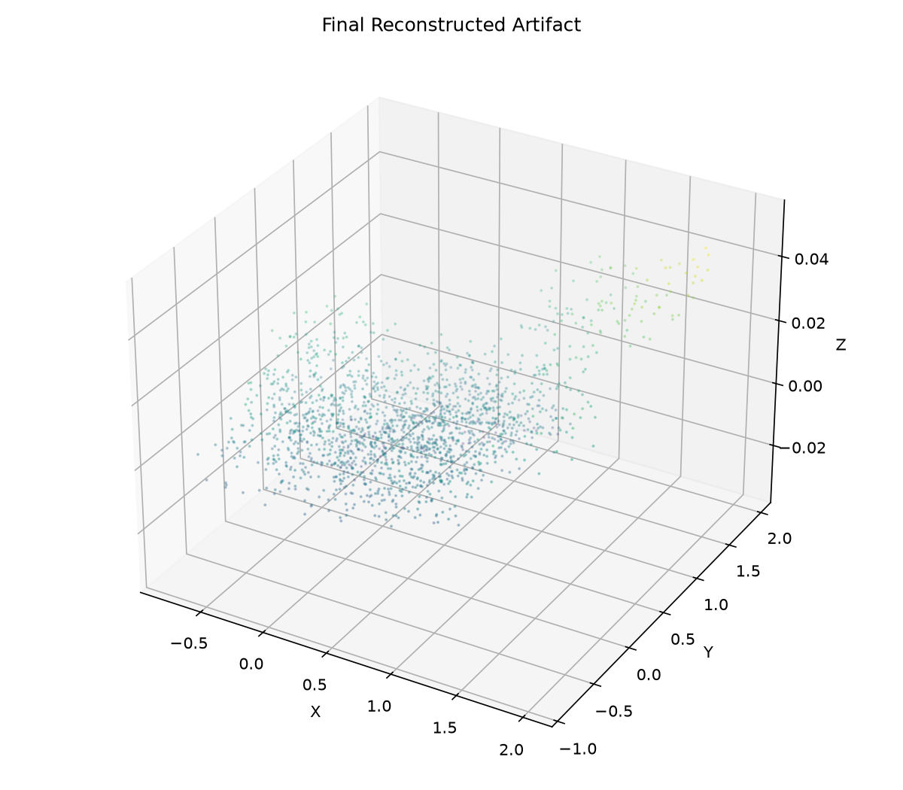
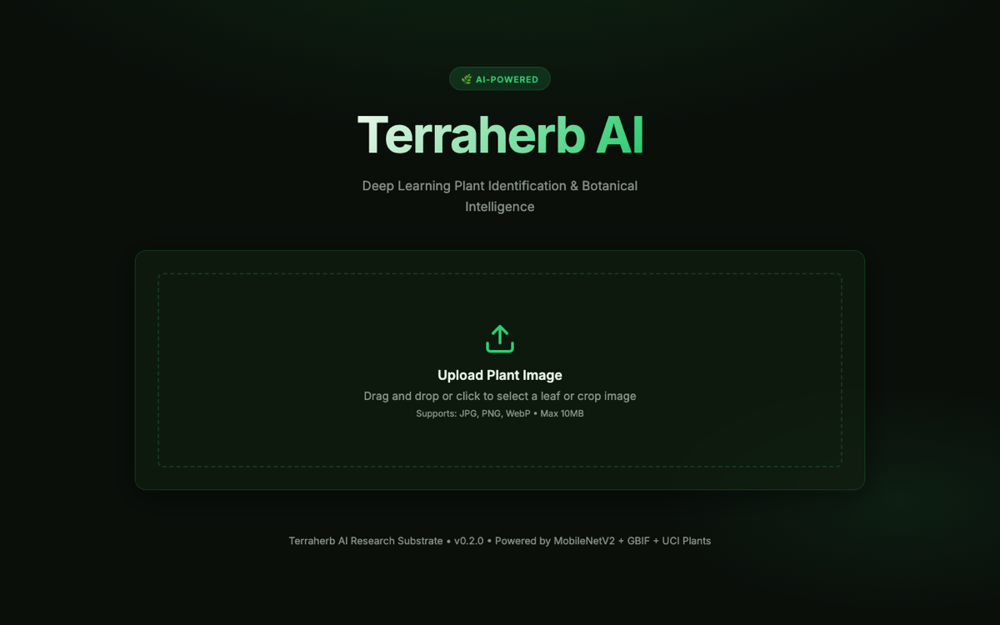
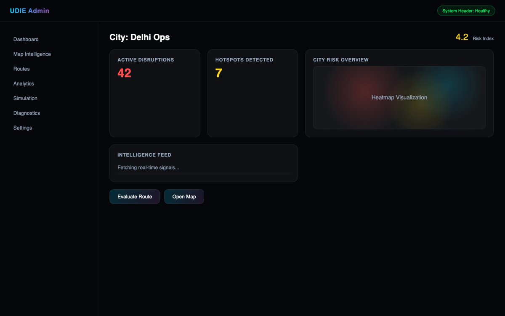
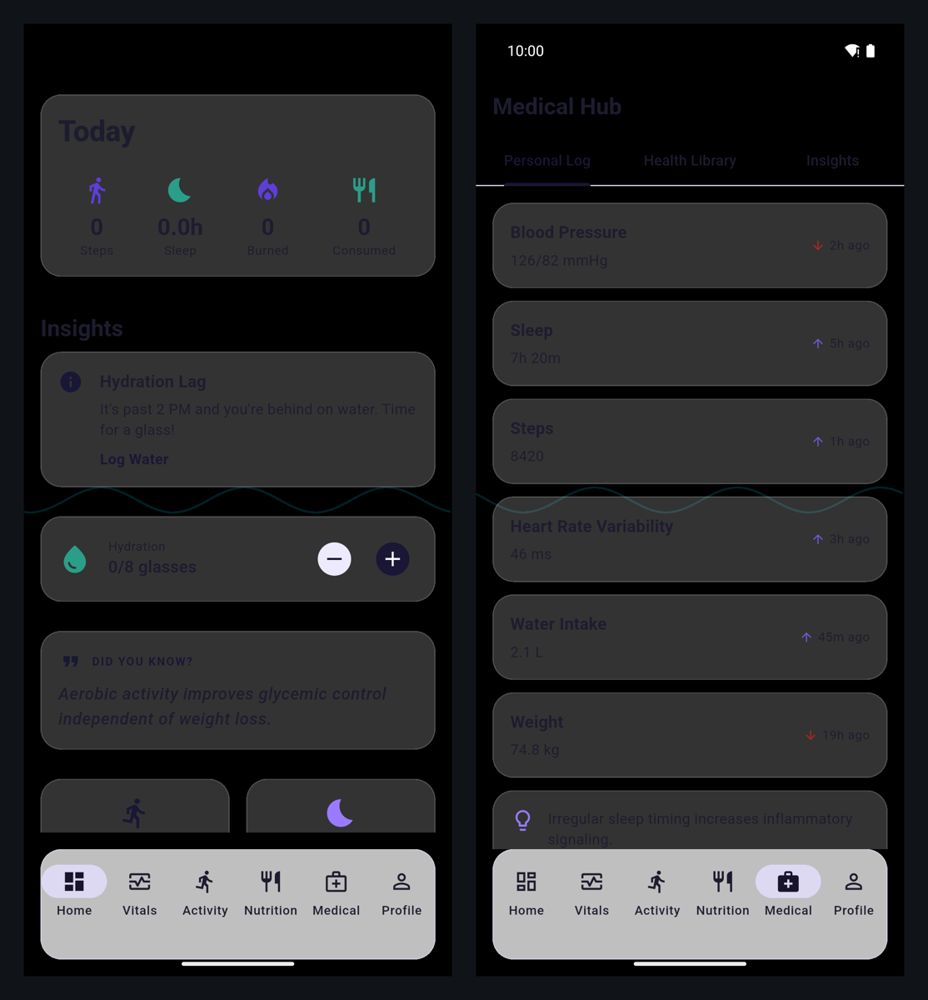
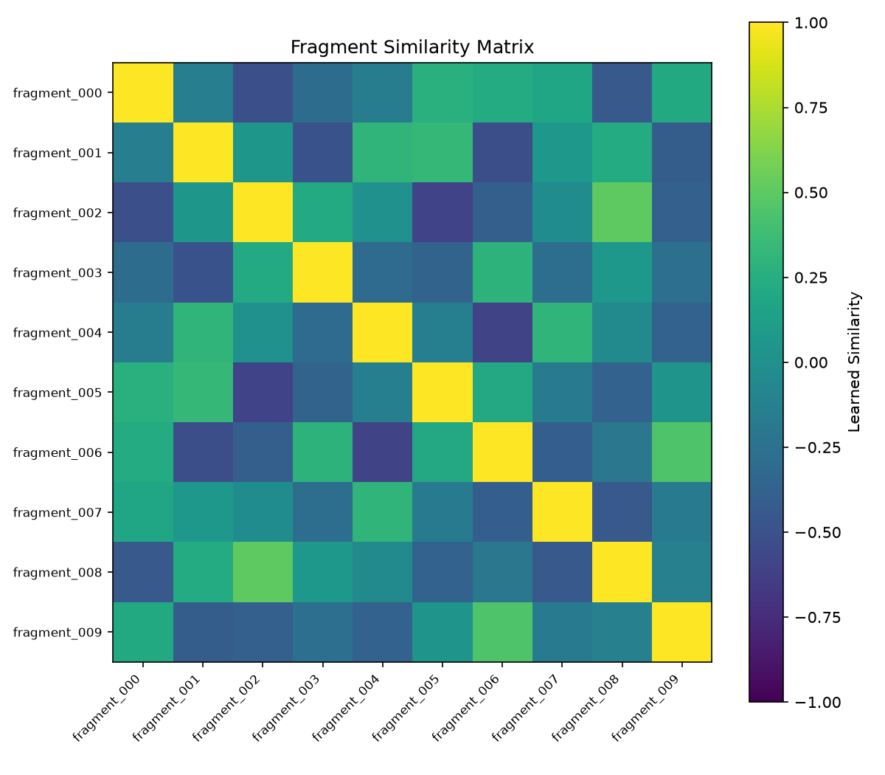

4
Systems Built
Software Engineering Portfolio
Computer Vision, Geospatial Platforms, and Mobile Applications
Software engineer building data-driven systems combining machine learning, spatial analytics, and scalable backend services.
4
Systems Built
82
Automated Tests Passing (verified Jul 2026)
1.5K+
Labeled Samples (AutoEIT-STS)
Engineering Focus
Designing end-to-end systems where ML models are integrated into reliable engineering workflows.
Building service layers, data pipelines, and deterministic APIs for production use-cases.
Developing geospatial analytics and offline-first mobile applications with clear system boundaries.
Featured Projects
3D Reconstruction System for Fragmented Artifacts

Problem
Reconstruct artifacts from partial 3D fragment scans.
Approach
Geometric feature extraction pipeline with embedding-based fragment matching and alignment.
Pipeline
Point Clouds -> Features -> Embeddings -> RANSAC + ICP -> Global Graph
Technical Output
Plant Disease Detection Platform

Problem
Classify plant species and diseases from leaf images.
Approach
Image ingestion and augmentation pipeline with CNN inference service and API delivery.
Pipeline
Image -> Augmentation -> CNN -> Classification -> API Response
Technical Output
Real-Time Urban Risk Intelligence Platform

Problem
Compute real-time risk across a city from streaming urban event signals.
Approach
Spatial event-sourcing backend with deterministic risk-field computation over a PostGIS grid.
Pipeline
Event Signals -> Ingestion -> Risk Compute -> PostGIS Grid -> API + Dashboard
Technical Output
Offline-First Mobile Health Analytics System

Problem
Track personal health data privately, fully offline, with no cloud dependency.
Approach
Modular Flutter app separating domain logic from Drift/SQLite persistence with reactive Riverpod state.
Pipeline
Entry -> Validators -> Drift (SQLite) -> Riverpod Providers -> Dashboard + Insights
Technical Output
Verified Evidence
Measured · Jul 2026
Full pipeline executed on the bundled 10-fragment sample corpus via the
healingstone-run CLI. All ten candidate pairs aligned successfully.

Measured · Jul 2026
Full pytest suite passing, and the FastAPI service verified live: health, class
catalog, and the /identify upload path including its low-confidence guardrail.
Measured · Jul 2026
Executed with flutter test: model serialization, health-value validators,
Riverpod providers, and a widget smoke test of the app shell all pass.
System Design Snapshots
Benchmark Results
| Project | Dataset / Scale | Measured Result | Method | Status |
|---|---|---|---|---|
| HealingStone | 10-fragment sample corpus | 10/10 alignments · mean ICP RMSE 0.0097 · completeness 74.9% | End-to-end healingstone-run |
Measured Jul 2026 |
| HealingStone | Test suite | 50/51 tests passing · 66% core coverage | pytest |
Measured Jul 2026 |
| TerraHerb | 88-class inference API | 24/24 tests passing · live API verified (health, classes, identify) | pytest + live requests |
Measured Jul 2026 |
| TerraHerb | PlantVillage training | ~97% accuracy (training log) | Independent re-run pending | Reported |
| LifeTrack | Flutter app (~12.5K LOC Dart) | 8/8 executed tests passing | flutter test |
Measured Jul 2026 |
| UDIE | Urban event stream | Risk model quality: TBD | — | Collecting |
Rows marked “Measured” were produced by executing the code on 5 July 2026; raw artifacts are in assets/images/evidence/. “Reported” values await independent re-verification.
Experiments
Compare FPFH descriptors against learned embeddings for fragment matching stability.
Evaluate EfficientNet vs MobileNet trade-offs for TerraHerb accuracy and inference cost.
Assess deterministic spatial risk field sensitivity under event burst and sparse-signal conditions.
Open Source Engineering
3D reconstruction pipeline emphasizing geometric matching and learned embeddings.
Geospatial event intelligence engine with backend compute and mobile integration.
CNN disease classification pipeline with dataset-driven evaluation.
Technical Skills
Experience & Education
2022 – Present
B.Tech · India
Coursework in algorithms, data structures, machine learning, and computer vision. Independent research into 3D reconstruction, geospatial systems, and mobile-first architectures.
2024
Self-Directed · HealingStone Project
Designed and implemented a full geometric reconstruction pipeline using Open3D, FPFH descriptors, Siamese embeddings, RANSAC, and ICP for aligning fragmented artifact scans.
2024
Self-Directed · TerraHerb Project
Built an end-to-end plant disease detection platform achieving ~97% top-1 accuracy on PlantVillage dataset. Delivered a FastAPI inference service with full training pipeline.
2023 – 2024
Self-Directed · UDIE & LifeTrack Projects
Developed a real-time geospatial risk intelligence platform using NestJS and PostGIS, plus an offline-first Flutter health analytics app with Riverpod state management and local SQLite persistence.
Resume
Contact
Interest areas: computer vision systems, geospatial intelligence, and applied AI engineering.
Location: India | Collaboration: Remote and hybrid opportunities.